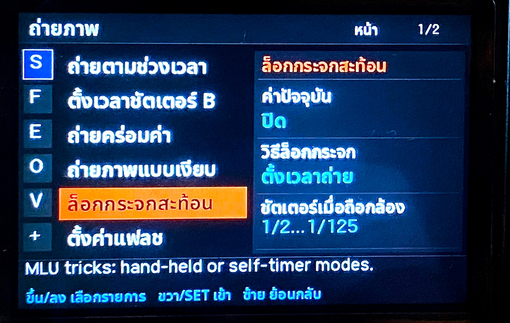
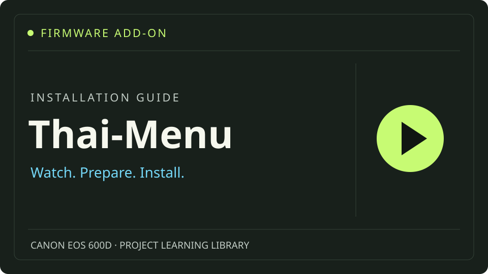

ไทยและอังกฤษ
ฟอนต์ที่รองรับสระและวรรณยุกต์ พร้อมสลับภาษา คงศัพท์เฉพาะที่คุ้นเคย เช่น Focus Peaking และ Histogram
เราอยากให้การเรียนรู้กล้องตัวเดิมเป็นเรื่องใกล้ตัวขึ้น จึงต่อยอด Magic Lantern ด้วยเมนูไทย–อังกฤษ และค่อย ๆ ปรับข้อความให้อ่านสบายสำหรับผู้ใช้ชาวไทย
โครงการอิสระของชุมชน · รุ่นทดลอง · ไม่ใช่บิลด์ที่ Magic Lantern หรือ Canon รับรอง

เปลี่ยนป้ายเป็น โหมด Live View คงเมนูไทยและอังกฤษ หน้าเวอร์ชั่น และการเลื่อนข้ามหมวด ไม่ต้องมี Magic Lantern มาก่อน: เลือกชุดติดตั้งครั้งแรกที่รวมตัวติดตั้งกับเมนูไทยแล้ว หรือชุดอัปเดตถ้ามี Magic Lantern อยู่แล้ว Source แยกต่างหาก
Canon EOS 600D / Canon firmware 1.0.2 เท่านั้น รุ่นนี้ยังไม่ผ่านการทดสอบบนกล้องจริง/QEMU หรือ first install ใหม่ ไม่ใช่ Stable และ source audit ของ dietlibc ยังเปิดอยู่
มีวิดีโอจากผู้พัฒนาให้ดูประกอบคู่มือ เปิดบน YouTube ในแท็บใหม่ แล้วกลับมาเลือกไฟล์ที่ตรงกับกล้องของคุณ

เริ่มจากเมนูภาษาไทย
และความอยากแบ่งปันให้คนรักการถ่ายภาพ
โครงการนี้เริ่มจากความชื่นชมในงานของ Magic Lantern และชุมชนผู้พัฒนาที่ช่วยเพิ่มความสามารถให้กล้องรุ่นเก่า ๆ ได้อย่างน่าประทับใจ เราอยากต่อยอดงานดี ๆ นี้ให้เป็นเมนูภาษาไทย เพื่อให้คนในประเทศไทยเข้าถึงและใช้งานเครื่องมือเหล่านี้ได้ง่ายขึ้น และมีโอกาสลองใช้กันกว้างขวางขึ้น
ความตั้งใจอีกอย่างคือ ทำตัวอักษรในเมนูให้ใหญ่ขึ้นและอ่านสบายขึ้น เวลาใช้งานจริงจะได้มองเห็นชื่อเมนูและค่าต่าง ๆ ชัดเจนขึ้น การปรับเล็ก ๆ แบบนี้คือสิ่งที่เราอยากค่อย ๆ ทำให้ดีขึ้นจากประสบการณ์ใช้งานและข้อเสนอแนะของทุกคน
เราอยากให้โครงการนี้เป็นจุดเริ่มต้นที่ชวนคนไทยสนใจ การพัฒนาโปรแกรมสำหรับการถ่ายภาพ มากขึ้น ได้ลองเรียนรู้ว่าเครื่องมือในกล้องทำงานอย่างไร และถ้าอยากปรับให้เหมาะกับตัวเอง จะเริ่มศึกษาและพัฒนาต่อได้อย่างไร
พร้อมกันนั้น เราหวังว่าจะช่วยให้ Open Source เป็นเรื่องใกล้ตัวคนไทยมากขึ้น ผ่านการเปิดซอร์ส ให้เครดิตผู้พัฒนาเดิม และแบ่งปันสิ่งที่ได้เรียนรู้ จะช่วยตรวจคำแปล แจ้งปัญหา เสนอไอเดีย หรือทดลองเขียนโค้ด ก็เป็นส่วนหนึ่งของการเรียนรู้ร่วมกันได้ครับ
มาร่วมเรียนรู้และแบ่งปันกันคงฟังก์ชันและเครดิตของ Magic Lantern พร้อมพัฒนาเมนู การจัดหมวด และคู่มือภาษาไทยใน fork ที่แยกจากโครงการต้นทาง
ฟอนต์ที่รองรับสระและวรรณยุกต์ พร้อมสลับภาษา คงศัพท์เฉพาะที่คุ้นเคย เช่น Focus Peaking และ Histogram
แยกเครื่องมือถ่ายภาพ โฟกัส วิดีโอ และเกม พร้อมแสดงข้อมูลกล้องและจำนวนชัตเตอร์เมื่ออ่านค่าจากกล้องได้จริง
เผยซอร์ส ประวัติการแก้ไข เครดิต และการใช้ AI อย่างชัดเจน พร้อมบันทึกข้อจำกัดและผลตรวจที่ทำจริง
ชวนดูหน้าตาเมนูถ่ายภาพ โฟกัส และตั้งค่าในภาษาไทยและอังกฤษ วางคู่กันให้ดูได้ในหน้านี้ครับ
ภาพถ่ายหน้าจอที่ผู้พัฒนาแบ่งปัน ยังไม่ได้ระบุเวอร์ชันบิลด์ของภาพ และภาพเหล่านี้ไม่ใช่ผลยืนยันการทดสอบทุกฟังก์ชัน
ภาพถ่ายโดยผู้พัฒนา Online2easy · รู้จักผู้พัฒนา
ชวนมารู้จักที่มาของโครงการ และสิ่งที่เรากำลังเรียนรู้ไปด้วยกัน
จากความชื่นชม Magic Lantern สู่ความตั้งใจทำเมนูภาษาไทยที่อ่านสบาย และพื้นที่เรียนรู้เรื่องซอฟต์แวร์ถ่ายภาพไปด้วยกัน
อ่านบทความรู้จักสถานะรุ่นทดลอง การทดสอบบนคอมพิวเตอร์และกล้องจริง และเหตุผลที่เราตรวจซอร์สก่อนเผยแพร่ไฟล์
อ่านบทความแยกไฟล์สำหรับผู้ติดตั้งครั้งแรก ผู้มี Magic Lantern อยู่แล้ว และผู้พัฒนา Source ให้เลือกตามการใช้งาน
คำแปล ฟอนต์ เวอร์ชั่น เมนู และ 39 bindings รวมถึง imports ของโมดูลผ่านการตรวจบนเครื่องพัฒนา
ตรวจ hash/size ของ ML-SETUP.FIR ตรงกับไฟล์ต้นทาง ไม่ได้ rebuild ตัวติดตั้ง
ยังไม่ได้ทดสอบ v3r5 บนกล้องจริง/QEMU หรือ first install และ corresponding source ของ inherited dietlibc ยังยืนยันไม่ครบ
จะช่วยอ่านคำแปล เสนอไอเดีย หรือเล่าปัญหาที่พบ ก็มีส่วนช่วยโครงการได้ครับ ยังไม่ต้องเขียนโปรแกรมเป็น และขณะนี้เว็บไซต์ยังไม่เปิดรับเงินสนับสนุน
เมื่อมีช่องทางสนับสนุน จะระบุผู้รับ วัตถุประสงค์ และเงื่อนไขให้ชัดเจน การสนับสนุนเป็นทางเลือก และไม่เปลี่ยนสิทธิ์การใช้ซอร์สตามใบอนุญาตเดิม
นอกจากเรื่องเมนูภาษาไทยบนเว็บไซต์นี้ คุณยังพบกับผู้พัฒนาได้ผ่านช่อง Online2easy บน YouTube และ Facebook รวมถึงบล็อก Online2hobby แวะมาติดตามหรือทักทายกันได้ครับ
ไม่ใช่ โครงการนี้เป็น fork อิสระของ Magic Lantern ซึ่งทำงานควบคู่กับระบบ Canon ไม่ใช่ตัวอัปเดตเฟิร์มแวร์ Canon และไม่ได้รับการรับรองจาก Canon หรือทีม Magic Lantern
ดาวน์โหลด v3r5 ได้ทั้งชุดติดตั้งครั้งแรกสำหรับกล้องที่ยังไม่มี Magic Lantern และชุดอัปเดตสำหรับผู้มี Magic Lantern แล้ว ไม่ต้องลง Magic Lantern จาก ZIP อื่นก่อนสำหรับชุดแรก แต่ยังเป็น Experimental และยังไม่มีผลทดสอบ first install ของรุ่นนี้บนฮาร์ดแวร์ อ่านคู่มือและตรวจ SHA256SUMS ก่อนใช้
ทั้งสองเกมเป็นสคริปต์ Lua ใช้โมดูล lua ไม่ใช่โมดูลชื่อตามเกม ส่วน Arkanoid ใช้โมดูล arkanoid อ่าน คู่มือเกม ก่อนใช้ เกมยังไม่ได้รับการยืนยันผลทดสอบ v3r5 บนฮาร์ดแวร์
เว็บไซต์นี้ไม่มีฟอร์มรับข้อมูล ไม่มีระบบบัญชี ไม่มีตัวติดตามสถิติ และไม่รับชำระเงิน เก็บโฮสต์บน GitHub Pages เมื่อเปิดใช้งาน ซึ่งมีการประมวลผลข้อมูลการเข้าถึงตาม นโยบายความเป็นส่วนตัวของ GitHub ลิงก์ไปยังบริการอื่นอยู่ภายใต้นโยบายของบริการนั้น